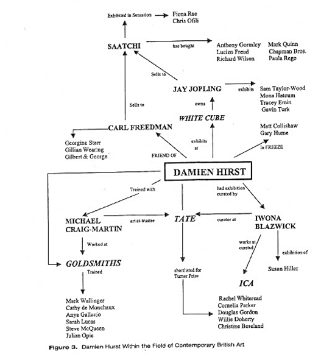

2. szint: A kortárs brit mûvészet területe
Az elemzés következõ szintje magának a kortárs brit mûvészetnek a feltérképezését vizsgálja. Egy ilyen térkép, hogy megmutassa a strukturális kapcsolatok között kiválasztott részt, például a mûvész, kritikusok, tanárok, kurátorok, múzeumok és intézmények galériák tulajdonosai és a vásárlók között. Az ilyen kapcsolatok tehát személyes és intézményi szinten, valamint formális és informális szinten jelentkeznek. Ezeknek a kapcsolatoknak a közege a gazdasági kulturális és társadalmi tõke szempontjából értelmezhetõ.
Ahelyett, hogy a terület
személytelenített térképét kínálnánk, a 3. ábra Damien
Hirst mûvészt használja példaként. Hirstet Buck (1998) "mindenütt jelenlévõ sztár státuszú"
(1999. o.) mûvészként írja le, és nagyon is az YBA-k
falkavezérének tekintik. A 3. ábra Hirst-tel
kezdõdik, majd tovább halad, hogy bemutassa kapcsolatait a terület más aktív
résztvevõivel. Ezáltal az utolsó bekezdésben említett összefüggéseket mutatja
be.

Megállapíthatjuk, hogy Damien Hirst jól helyezkedik el a területen. Három intézménnyel van kapcsolata: a Goldsmiths-el, a Tate-el és az Saatchi galériával: A Goldsmiths London egyik vezetõ mûvészeti iskolája. Hirst itt képezte magát a befolyásos tanár, Michael Craig-Martin mentorálasa alatt. Kapcsolata a Goldsmiths-hez, más Goldsmiths-es diákokkal együtt (a Freeze kiállítás), Carl Freedman (a Modern Medicine kiállítás) és Jay Jopling (a White Cube galéria és Hirst pénzalapítvány tulajdonosa) fontosak a mezõ késõbbi pozícionálásához, ahogyan a sikere is ezen egyének pozícionálásától függ - egy kölcsönösen elõnyös és önmagát konstituáló kapcsolat. Talán nem meglepõ, hogy a sikert sikerre halmoz, és a törekvõ mûvészek célja lehet, hogy hasonló kapcsolathálózatot hozzanak létre.
Ahol sikerrel járnak, ott kulturális felszentelésben részesülnek. Visszatérve Buck (1998) kommentárjára, az általa feltörekvõ csillagként felsorolt mûvészek több mint 80%-a ugyanolyan kulcsfontosságú intézményekkel és személyekkel áll kapcsolatban, mint Hirst. Ezen a ponton érdemes hangsúlyozni, hogy ezek az intézményi kapcsolatok valójában hogyan fejezõdnek ki az egyéni vagy személyes kapcsolat szintjén. Bourdieu a társadalmi tõke felértékelõ hatásáról írt (lásd Accardo & Corcuff,1986, 94. o.). A társadalmi tõke megolajozódik a folyamatban, és lehetõvé teszi a legitimációt.
Az érintettek habitusa szintén rendkívül fontos eleme a társadalmi tõkének és az általuk biztosított intézményi hatalomnak. Vegyük a Hirst-tel kapcsolatban álló három kulcsszemélyt: Iwona Blazwick, Michael Craig-Martin és Jay Joplin.
Iwona Blazwick kurátorkodott Hirst elsõ önálló kiállításán. Õ az intézményi kulturális tõke szempontjából különösen erõs habitust példázza, kapcsolatai vannak a The Institute of Contemporary Art-hoz, a Phaidon Presshez, a National Trusthoz, a Henry Moore Sculpture Trusthoz, a Tate Gallery Liverpoolhoz és legutóbb a Tate Modernhez.
Michael Craig-Martin hasonlóan erõs tõkemintát mutat, de ezúttal fõként a mûvészeti oktatási intézményekkel való kapcsolat révén szerzett kulturális tõkébõl származik. A Goldsmiths mûvészeti professzora, de tanított Canterburyben és Bathban is. Ez a tapasztalat nem csak intézményi szentesítést biztosít, hanem erõs pozícióba helyezi õt abban, hogy intézményi szentesítést kínáljon másoknak. Saját Yale-i tanulmányai további oktatási alapú kulturális tõkét kínálnak - magából az intézménybõl, de a tartalomspecifikusabb mûvészeti tõkébõl is. Többek között Frank Stella amerikai avantgardista tanította, és tapasztalatot szerzett a Bauhaus elvein alapuló tanításban. Saját, korábban sikeres konceptuális mûvészként szerzett tapasztalatai kulturális tõkét raknak le rá, akárcsak a Tate mûvészeti kuratóriumában való késõbbi szerepvállalása.
Jay Jopling egészen másfajta habitusra tett szert. Az angol állami iskolában, Etonban tanult, mielõtt egy intézményes egyetemen mûvészettörténetbõl diplomázott. Ez a háttér a társadalmi származásából eredõ magas szintû társadalmi tõkére utal. Bourdieu ezt a fajta tõkét az egyén személyiségében és jellemében "megtestesült" tõkének nevezte. Ezt a jó kapcsolatokkal rendelkezõ fiatalemberrõl alkotott képet tovább bizonyítja a Band Aid és a Save the Children (Mentsük meg a gyerekeket) programokban való aktív részvétele 1986-ban. Jopling az 1980-as években, New Yorkban is járt, ahol olyan meghatározó mûvészekkel került kapcsolatba, mint Julian Schnabel és Jean Michel Basquiat. Megalapította a White Cube galériát is, amely hamarosan a fiatal brit mûvészet egyik vezetõ kiállítóhelyévé vált.
E trió minden egyes tagjának
habitusa alapvetõen különbözik, de együttesen a társadalmi, kulturális és
gazdasági tõke olyan erõteljes konfigurációját kínálják, amelyet Hirst
érdekében fel lehetett használni, hogy felgyorsítsa pályafutását a pályán. Más
szóval, a mûvészeti mezõ szereplõinek ez a triója a strukturális pozícionálás
szempontjából "royal flush"-t kínált Hirstnek - a
munkatársak jó választását Hirst serpenyõjében, olyan tõkével, amelyet el
tudott sajátítani, és amelyet fel lehetett használni az egymást követõ, erõsebb
mezõbeli pozíciók elérésére.